Включаем DAC / OUT1 Configuration.
DAC висит на APB1. В настройках включаем внешний буффер, триггер оставляем отключенным.
HAL_DAC_Start(&hdac, DAC_CHANNEL_1);
HAL_DAC_SetValue(&hdac, DAC_CHANNEL_1, DAC_ALIGN_12B_R, 1365); // 4095/3
Запускаем ЦАП и второй командой выдаем на его порт напряжение 1 вольт.
Рассчитывалось это по формуле:
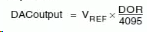
В качестве DACout подставляем 1, Vref = 3. DOR получается = 1/3 * 4095 = 1365.
Попробуем сделать генератор "треугольных импульсов" и вывести ступенчатый треугольник от 0 до напряжения питания с шагом 1/4. Для это на выход в цикле будем подавать следующие значения:
HAL_DAC_SetValue(&hdac, DAC_CHANNEL_1, DAC_ALIGN_12B_R, 0x00000000);
HAL_DAC_SetValue(&hdac, DAC_CHANNEL_1, DAC_ALIGN_12B_R, 0x00000400); //2048 == 0.75V
HAL_DAC_SetValue(&hdac, DAC_CHANNEL_1, DAC_ALIGN_12B_R, 0x00000800); //2048 == 1.5V
HAL_DAC_SetValue(&hdac, DAC_CHANNEL_1, DAC_ALIGN_12B_R, 0x00000C00); //3072 == 2.25V
HAL_DAC_SetValue(&hdac, DAC_CHANNEL_1, DAC_ALIGN_12B_R, 0x00000FFF); //4095 == 3V
HAL_DAC_SetValue(&hdac, DAC_CHANNEL_1, DAC_ALIGN_12B_R, 0x00000C00);
HAL_DAC_SetValue(&hdac, DAC_CHANNEL_1, DAC_ALIGN_12B_R, 0x00000800);
HAL_DAC_SetValue(&hdac, DAC_CHANNEL_1, DAC_ALIGN_12B_R, 0x00000400);
Между каждой корректировкой выходного напряжения можно вставлять задержку, регулируя тем самым частоту на выходе.
Должно получиться что-то вроде этого:
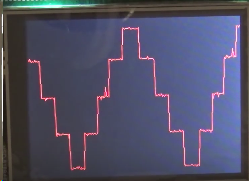
TRIGGER
Попробуем сделать выходной импуль более сглаженным без применения конденсаторов, а с помощью аппаратно-программной реализации. В Кубе потребуется настроить таймер, для этого возьмем самый простой - TIM6. Он также висит на шине тактирования APB1.
В настройках таймера предделитель = 0, счетный период = 4, в настройках Триггера выставляем Update Event, чтобы триггер срабатывал при событии обновления.
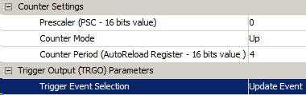
В настройках ЦАП привязываем триггер к 6 и включаем аппаратную генерацию треугольных импульсов. Амплитуду задаем в диапозоне от 0 до 4095. Выставялем максимальную по напряжению питания. Прерывания и DMA не требуются.
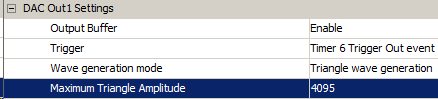
Настройки сохраняем и генерируем проект.
Теперь в main() после инициализации перефирии необходимо запустить еще и таймер:
HAL_TIM_Base_Start(&htim6);
Т.е. все - только запуск таймера и ЦАП, больше ничего (из while все удаляем).
HAL_TIM_Base_Start(&htim6);
HAL_DAC_Start(&hdac, DAC_CHANNEL_1);
while (1)
{ }
На выходе получаем генератор:
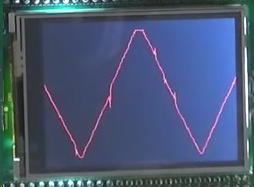
Если в Кубе уменьшить счетный период, например, до 1,
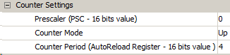
то увеличится частота сгенерированных импульсов.
Так же частоту можно увеличить, уменьшив прескаллер в настройке тактирования APB1.
На максимальной частоте 84 МГц и Counter Period = 1 импульсы выглядят следующим образом:
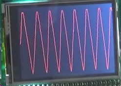
Да-да, шкал частоты и амплитуды нет, просто уровень примитивной визуализации.
При этом стоит учитывать, что частота предельна из-за разрешения - на каждый полупериод приходится 4096 отсчетов. Подобное сглаживанние может быть избыточным.
Количество отсчетов при сохранении максимальной амплитуды можно уменьшить с помощью записи выходных параметров через DMA.
TRIGGER + DMA
Для работы через триггер апппаратную генерацию в DAC отключаем:
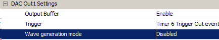
Перенастроим таймер следующим образом:
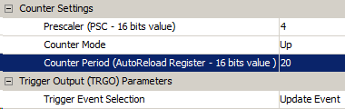
В настройках DAC включаем DMA.
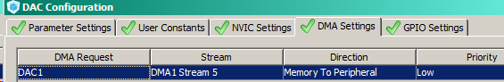
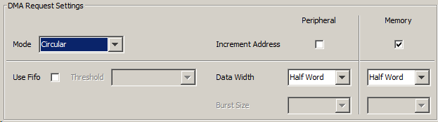
Генерируем.
Создаем массив (можно через Excel) значений с шагом 0, 127, 255 и до 4095.
/* USER CODE BEGIN PV */
/* Private variables ---------------------------------------------------------*/
uint16_t dac_triangle[65] = {
127,255,383,511,639,767,895,1023,
1151,1279,1407,1535,1663,1791,1919,
2047,2175,2303,2431,2559,2687,2815,
2943,3071,3199,3327,3455,3583,3711,
3839,3967,4095,
3967,3839,3711,3583,3455,3327,3199,
3071,2943,2815,2687,2559,2431,2303,
2175,2047,1919,1791,1663,1535,1407,
1279,1151,1023,895,767,639,511,383,
255,127,0};
/* USER CODE END PV */
Перед циклом while запускаем все это великолепие: DAC и таймер с DMA.
HAL_TIM_Base_Start(&htim6);
HAL_DAC_Start_DMA(&hdac, DAC_CHANNEL_1, (uint32_t*)dac_triangle, 64, DAC_ALIGN_12B_R);
В качестве параметров передаем дополнительно адрес начала массива, преобразовав его в 32-битный формат, размер массива и параметр сдвига. Если прошить и зацепиться осциллографом, то картина будет примерно следующей:
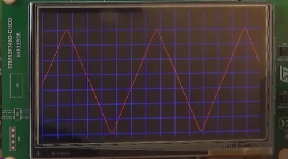
Частоту можно изменить сразу в проекте в функции инициализации таймера static void MX_TIM6_Init(void)
htim6.Init.Period = 4;
Если выставить 10, то...
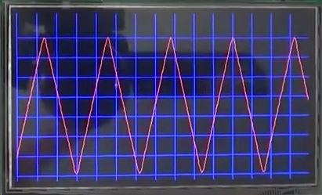
SINUS DMA
Аналогично прердыдущему споосбу создаем массив отсчетов, образующих синус:
uint16_t dac_sinus[60] = {
11,45,100,177,274,391,526,678,844,
1024,1215,1415,1622,1834,2048,2262,
2474,2681,2881,3072,3252,3418,3570,
3705,3822,3919,3996,4051,4085,4095,
4085,4051,3996,3919,3822,3705,3570,
3418,3252,3072,2881,2681,2474,2262,
2048,1834,1622,1415,1215,1024,844,
678,526,391,274,177,100,45,11,0};
uint32_t CLK_Counter = 0;
char str[20];
/* USER CODE END PV */
Добавляем дефайны в main.c и файл прерываний (stm32f4xx_it.c):
#define DWT_CYCCNT * (volatile unsigned long *) 0xE0001004 //enable counting
#define DWT_CONTROL * (volatile unsigned long *) 0xE0001000 //enable counting
#define SCB_DEMCR * (volatile unsigned long *) 0xE000EDFC //enable counting
В stm32f4xx_it.c указываем внешнюю переменную:
extern uint32_t CLK_Counter;
и в прерывании DMA сохраняем, после чего обнуляем показания счетчика:
void DMA1_Stream5_IRQHandler(void)
{
/* USER CODE BEGIN DMA1_Stream5_IRQn 0 */
CLK_Counter = DWT_CYCCNT;
DWT_CYCCNT = 0;
/* USER CODE END DMA1_Stream5_IRQn 0 */
HAL_DMA_IRQHandler(&hdma_dac1);
/* USER CODE BEGIN DMA1_Stream5_IRQn 1 */
/* USER CODE END DMA1_Stream5_IRQn 1 */
}
В рабочем файле в main() инициализируем счетчик и запускаем его:
/* USER CODE BEGIN 2 */
uint32_t frq = HAL_RCC_GetHCLKFreq(); //get frequency of microcontroller
SCB_DEMCR |= 0x01000000;
DWT_CONTROL |= 1;
DWT_CYCCNT = 0; //start counting
lcdInit();
lcdSendCmnd(0x00);
/* USER CODE END 2 */
/* Infinite loop */
/* USER CODE BEGIN WHILE */
HAL_TIM_Base_Start(&htim6);
HAL_DAC_Start_DMA(&hdac, DAC_CHANNEL_1, (uint32_t*)dac_sinus, 60, DAC_ALIGN_12B_R);
В переменную frq заносим текущую тактовую частоту, на которой работает RCC.
Инициализируем дисплей и попробуем на него в цикле выводить частоту.
while (1)
{
lcdSendCmnd(0x00);
lcdSendCmnd(0x01);
uint16_t freq = (frq / CLK_Counter);
if(freq > 9999)
{
lcdSendData(freq / 10000);
freq %= 10000;
}
if(freq > 999)
{
lcdSendData(freq / 1000);
freq %= 1000;
}
if(freq > 99)
{
lcdSendData(freq / 100);
freq %= 100;
}
if(freq > 9)
{
lcdSendData(freq / 10);
freq %= 10;
}
lcdSendData(freq);
HAL_Delay(1000);
}
На дисплей МК выводит 278, т.е. 27,8кГц.
Осциллограф должен показать синус:
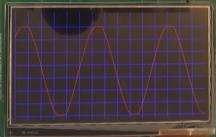
NOISE
Встроенный псевдогенератор шума включается в настройках DAC:
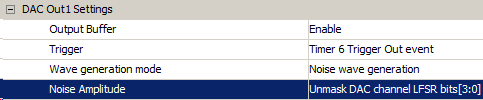
DMA отключен, таймер работает в режиме триггера (Update Event).
Для запуска в main() вбиваем только 2 функции:
HAL_TIM_Base_Start(&htim6);
HAL_DAC_Start(&hdac, DAC_CHANNEL_1);
При этом необходимо учитывать, что на больших частотах максимальная амплитуда не будет достигнута, поскольку DAC не будет успевать обрабатывать значения. Поэтому необходимо подстраивать в настройках таймера предделитель и Counter Period.
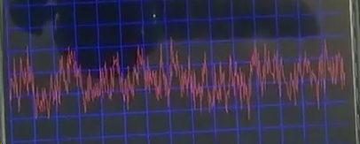
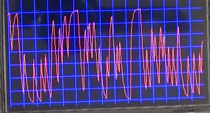
По графикам видно, что на примлемых частотах "шум" имеет малую степень случайности, присутствуют повторения. Дело в том, что велечины берутся из показаний температуры теплового резистора.
NOISE + RNG
Чтобы сгенерировать шум программным путем через рандомайзер, необходимо включить функцию RNG.
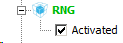
При этом Кьюб может потребовать переделать частоты на периферии, чтобы уложиться в лимиты.
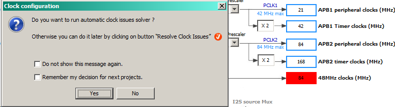
В настройках DAC отключаем триггеры и DMA.
В настройках таймера потребуется включить прерывания.
Генериурем.
/* BEGIN 2 */
HAL_TIM_Base_Start_IT(&htim6);
HAL_DAC_Start(&hdac, DAC_CHANNEL_1);
/* END 2 */
Пишем обработчик прерывания для таймера:
/* BEGIN 4 */
void HAL_TIM_PeriodElapsedCallback(TIM_HandleTypeDef *htim6)
{
uint16_t rand = HAL_RNG_GetRandomNumber(&hrng) & 0x00000FFF;
HAL_DAC_SetValue(&hdac, DAC_CHANNEL_1, DAC_ALIGN_12B_R, rand);
}
/* END 4 */
Прошиваем. На частоте 1МГц:
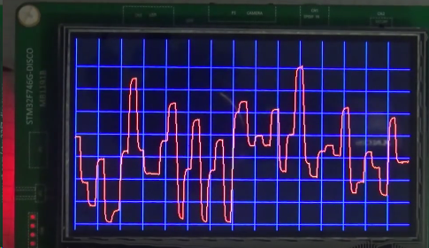